低エネルギー電子照射
操作マニュアル
SG-4104・Matsusadaプローブアンプ・HIOKI・10 kΩ箱によるパルスバイアスセット手順
加筆しやすいように、表は使わず、箇条書き中心で整理

図1 最初に見る全体ブロック線図。電気の流れと電子の通り道を分けて見る。
0. このマニュアルの流れ
- まず、装置同士がどうつながるかをブロック線図で確認する。
- 次に、装置一つ一つの役割を確認する。
- SG-4104、Matsusadaプローブアンプ、HIOKI、抵抗、試料ホルダーは「パルスバイアスセット」としてまとめて確認する。
- その後、「波形だけ確認する場合」「プローブアンプ出力を確認する場合」「金属ダミーで試す場合」「ダイヤモンド本番の場合」に分けて操作する。
- 最後に、注意事項、止める条件、トラブル時の確認点を見る。
追記欄：
＿＿＿＿＿＿＿＿＿＿＿＿＿＿＿＿＿＿＿＿＿＿＿＿＿＿＿＿＿＿＿＿＿＿
＿＿＿＿＿＿＿＿＿＿＿＿＿＿＿＿＿＿＿＿＿＿＿＿＿＿＿＿＿＿＿＿＿＿
1. 装置接続のブロック線図
このページでは、どの装置がどこにつながるかだけを確認します。細かい操作は後の章で分けて説明します。
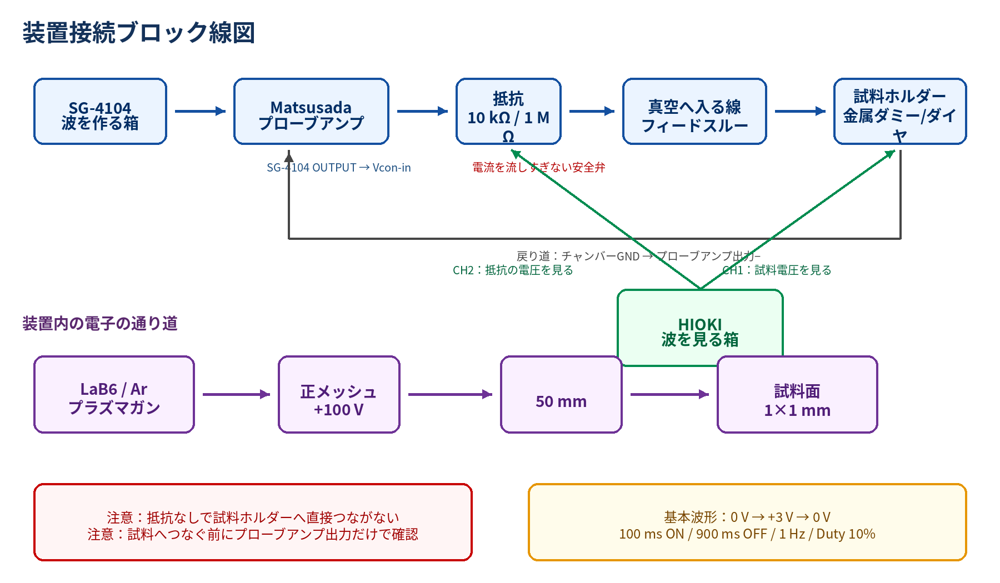
図2 電気接続とプラズマ配置の全体図。
- SG-4104は、100 ms ON / 900 ms OFF の波を作る。
- Matsusadaプローブアンプは、SG-4104の小さい信号を大きくして試料側に出す。
- 抵抗は、電流が流れすぎないようにする安全部品。
- HIOKIは、試料電圧や抵抗に出た電圧を見る装置。電圧を出す装置ではない。
- 試料ホルダーは、金属ダミーまたはダイヤモンドを置く台。
- チャンバーGNDは0 Vの基準。戻り道として必要。
- パルスバイアスセットは、試料側へ正パルスを入れ、HIOKIで試料電圧と抵抗電圧を記録する確認単位として扱う。
2. 装置一つ一つの解説
2-1. SG-4104：波を作る箱
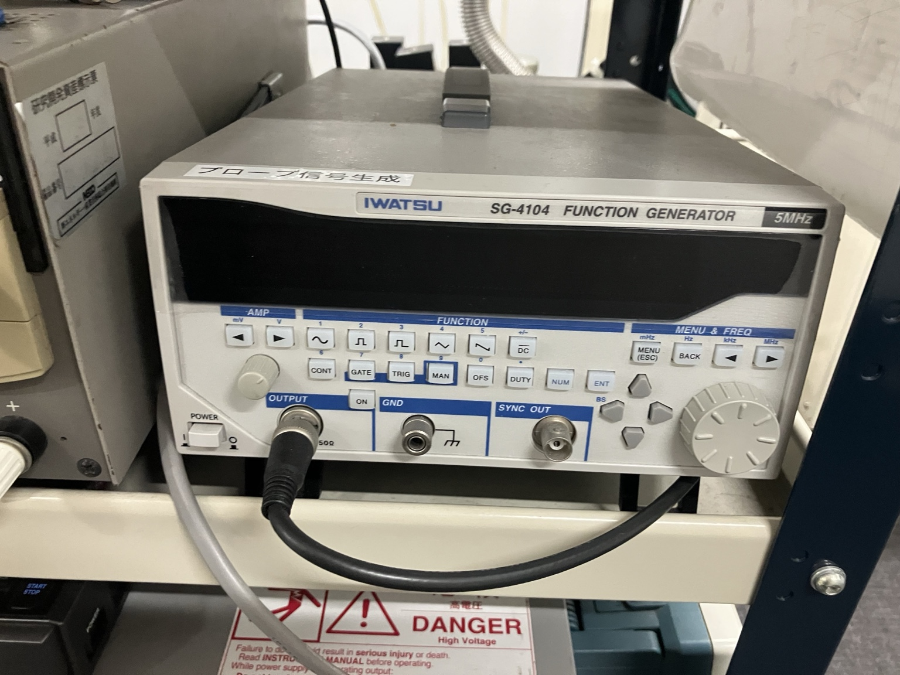
写真1 SG-4104。OUTPUTからMatsusadaのVcon-inへ入れる。
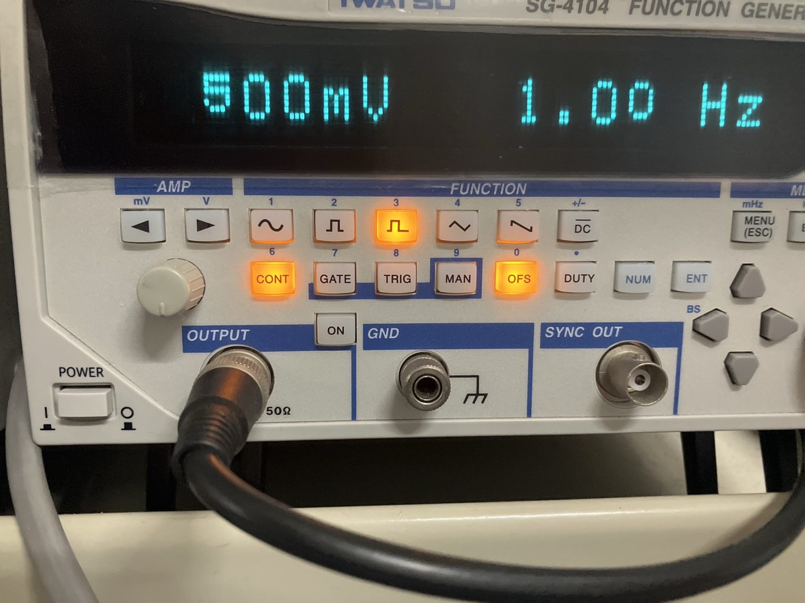
写真2 SG-4104の設定例。3番のパルス波、1.00 Hz。
- 役割は、ON/OFFのリズムを作ること。
- 使う波形は、3番のパルス波。
- 使うモードはCONT。GATE、TRIG、MANは使わない。
- 周波数は1.00 Hz。
- Dutyは10%。これでON 100 ms、OFF 900 msになる。
- SG-4104の電圧は、そのまま試料電圧ではない。プローブアンプで約12倍される。
- 試料側を0〜+3 Vにしたい場合、SG-4104側は0〜+0.25 V程度にする。
- 試料側を0〜+5 Vにしたい場合、SG-4104側は0〜+0.42 V程度にする。
- 最初は200 mV程度から始め、HIOKIで実際の出力を確認する。
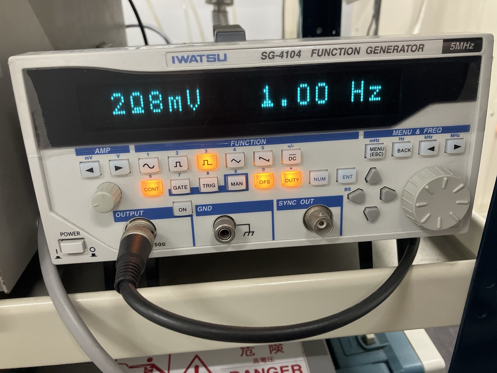
写真3 SG-4104が200 mV表示の例。約12倍後はおよそ2.4 V。
2-2. Matsusadaプローブアンプ：電圧を強くする箱
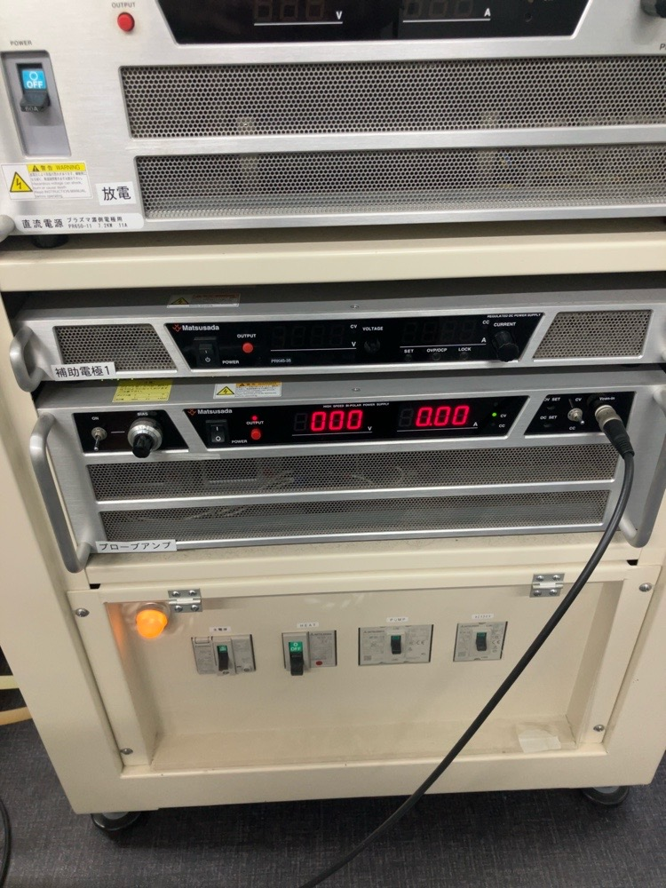
写真4 Matsusadaプローブアンプ。Vcon-in、OUTPUT、CV/CC、BIASを確認する。
- 役割は、SG-4104の小さい波を試料にかけられる電圧にすること。
- SG-4104のOUTPUTを、プローブアンプのVcon-inへ入れる。
- プローブアンプの出力+を、抵抗を通して試料ホルダーへつなぐ。
- プローブアンプの出力−を、チャンバーGNDへつなぐ。
- 写真の表示が0.00 Vの場合、出力が出ていない、または入力が反映されていない可能性がある。
- OUTPUTを押しても反応しない場合は、まず試料を外して、プローブアンプ出力+/-だけを測る。
- BIASつまみで手動出力できるか確認すると、プローブアンプ本体の問題か、Vcon-in側の問題かを分けられる。
2-3. HIOKI LR8431：波を見る箱
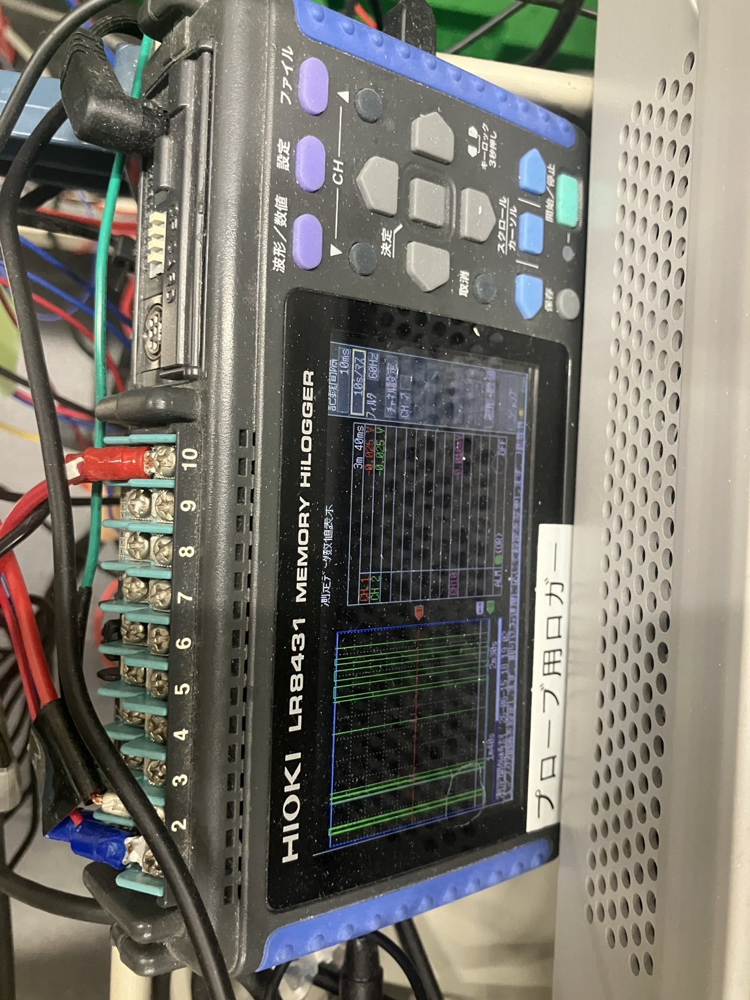
写真5 HIOKI LR8431。電圧波形の確認と記録に使う。
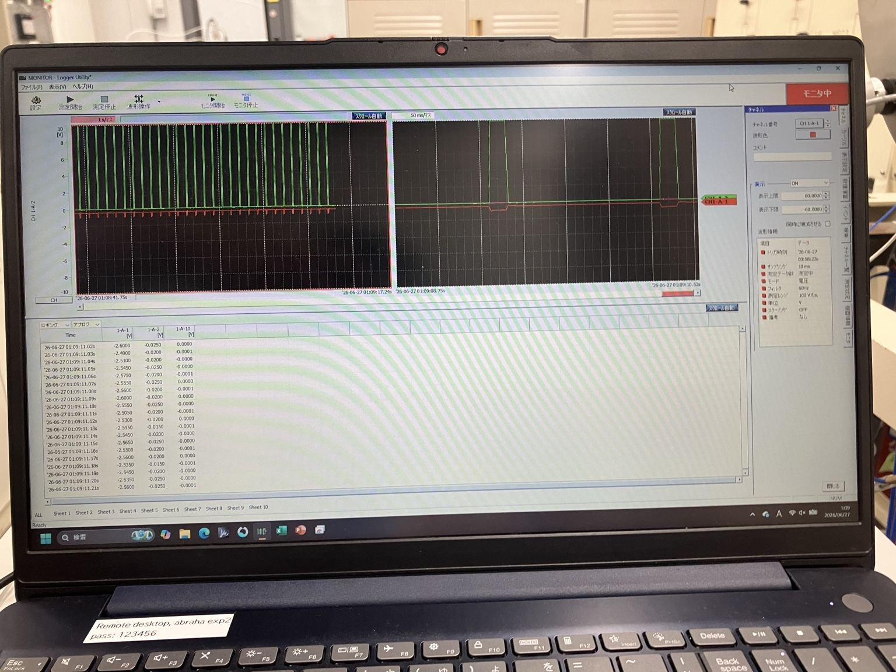
写真6 HIOKIの測定画面。緑や赤の波形で電圧変化を見る。
- HIOKIは電圧の変化を見る装置。電流を直接見る装置ではない。
- 試料ホルダー電圧を見るときは、CH+を試料ホルダー、CH−をGNDにつなぐ。
- 抵抗にかかった電圧を見るときは、抵抗の両端をHIOKIで見る。
- 電流は、抵抗にかかった電圧を抵抗値で割って計算する。
- 画面の「表示上限」「表示下限」は、表示スケール。実際にその電圧が出ているという意味ではない。
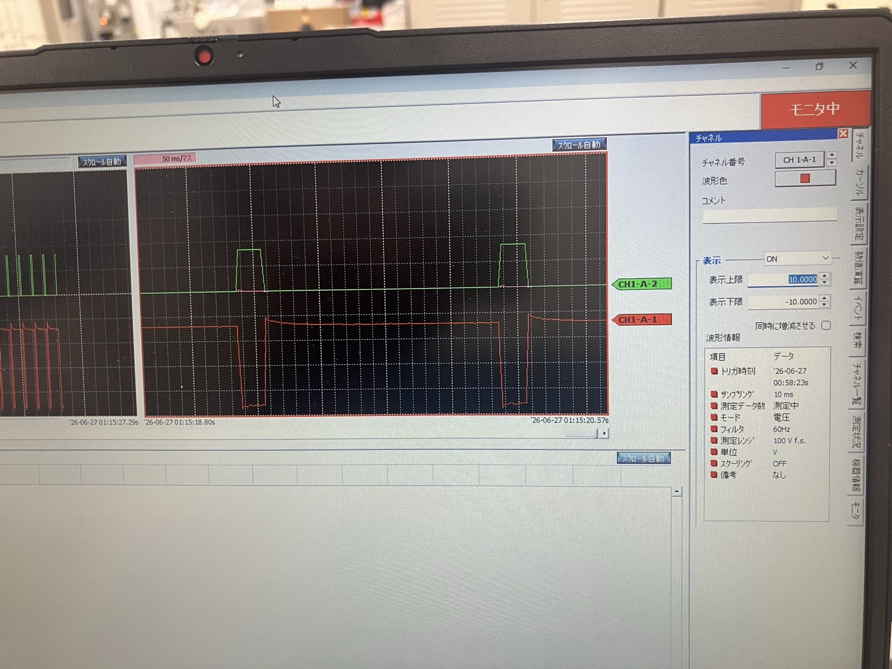
写真7 表示スケールを見ている例。スケール値と実測値を混同しない。
2-4. 10 kΩ箱・抵抗：電流止め
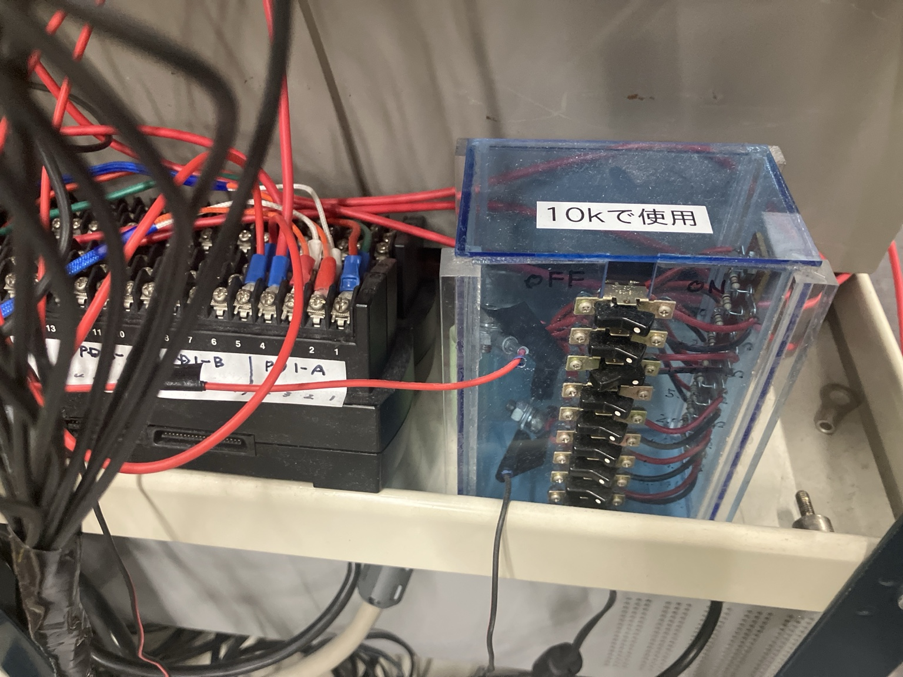
写真8 10 kΩ箱。使う前にテスターで抵抗値を確認する。
- 抵抗は、電流が流れすぎないようにする安全部品。
- 今回の10 kΩ箱は、10 kΩとして使える可能性がある。まずテスターで確認する。
- 抵抗が10 kΩで、そこに1 V出たら、電流は100 µA。
- 抵抗が10 kΩで、そこに10 V出たら、電流は1 mA。
- 抵抗が10 kΩで、そこに100 V出たら、電流は10 mA。
2-5. 試料ホルダー：金属ダミーまたはダイヤモンドを置く台
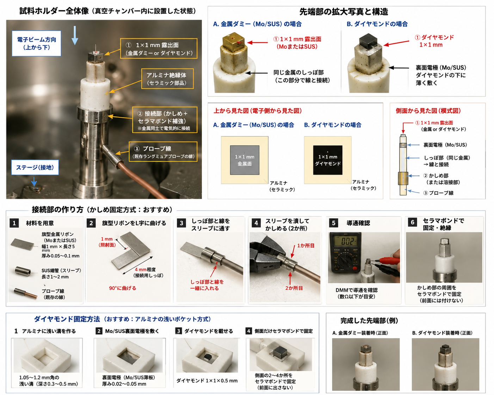
写真9 試料ホルダー先端の構造イメージ。前面は1×1 mmだけ露出させる。
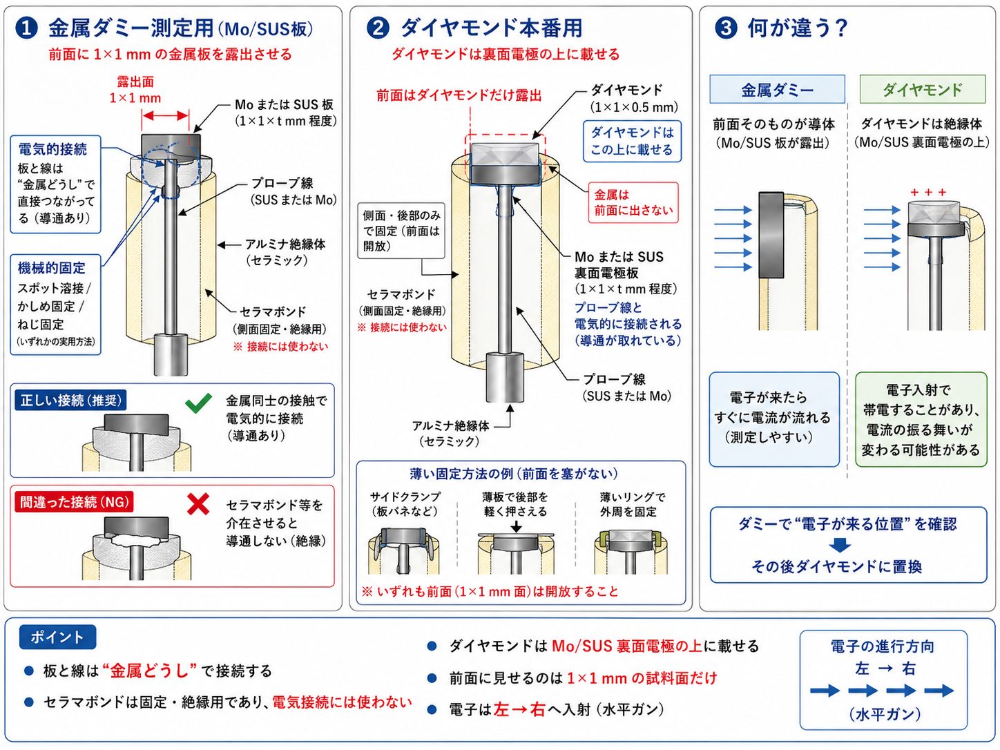
図3 金属ダミーとダイヤモンドで何が違うか。
- 最初は金属ダミーを使う。金属ダミーは電子がその位置まで来ているかを見るための上限チェック。
- ダイヤモンドは絶縁体なので、金属ダミーと同じように電流が流れるとは限らない。
- 前面に見せるのは1×1 mmの試料面だけ。周囲に銅端子や大きな金属面を出さない。
- 銅は前面に出さない。過去に赤熱・汚染が起きたため、前面材料はMoまたはSUSを基本にする。
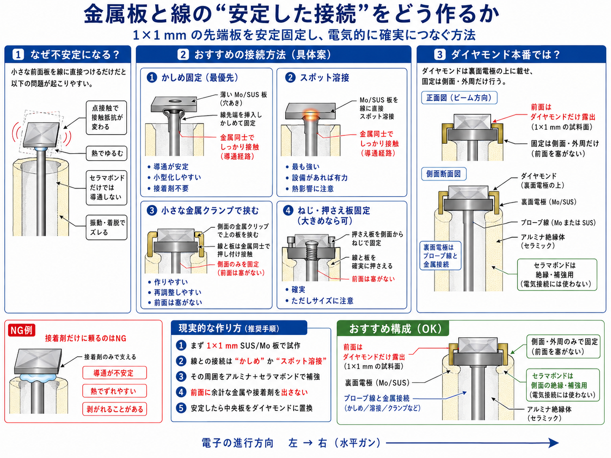
図4 金属板と線を安定してつなぐ考え方。接着剤だけで導通を作らない。
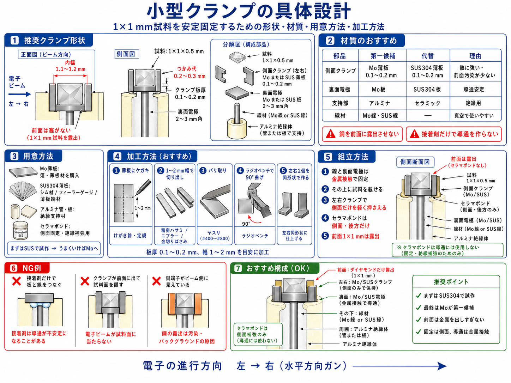
図5 小型クランプの考え方。前面を塞がず、側面・後ろで固定する。
2-6. パルスバイアスセット：正パルスを試料へ入れる一式
- SG-4104、Matsusadaプローブアンプ、HIOKI、電流制限抵抗、試料ホルダー、チャンバーGNDを一つのセットとして確認する。
- 目的は、電子照射中の試料側へ0 V〜+3〜+5 V程度の正パルスを入れ、ON/OFFと抵抗電圧を記録すること。
- 標準の入口条件は、1.00 Hz、Duty 10%、ON 100 ms、OFF 900 ms。最初は0〜+3 Vから確認する。
- BIASつまみは本体単体の切り分け確認に使う。本番条件ではVcon-inからのパルス入力を基本にする。
- HIOKIは、試料ホルダー電圧を必ず見る。チャンネルに余裕があれば、抵抗両端の電圧も同時に見る。
- 電流は、抵抗にかかった電圧を抵抗値で割って換算する。HIOKIの表示スケールを電流と混同しない。
3. 目標波形と調整の考え方
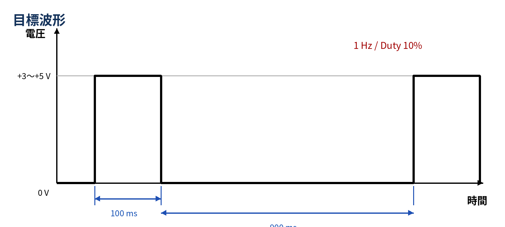
図6 目標波形。100 msだけON、900 ms休む。
- 使う波形は、0 Vから+3〜+5 Vへ上がる正パルス。
- 負電圧には振らない。
- ON 100 msは、電子を引き寄せる時間。
- OFF 900 msは、帯電と発熱を逃がす時間。
- 電流が小さい場合は、電圧を+3 Vから+5 Vへ上げる。
- 電流が大きい場合は、電圧を下げるか、ON時間を短くする。
- 電流がON直後だけ出てすぐ落ちる場合は、帯電が疑われる。そのときはONを10〜50 msに短くし、OFFを長くする。
4. ケース別の操作手順
4-0. パルスバイアスセットを組む前の確認
目的：各装置をつないだ後で迷わないように、信号の入口、出力、戻り道、測定点を先に確認する。
- SG-4104、Matsusada、HIOKI、抵抗箱、試料ホルダー、GND線を見える順に並べる。
- SG-4104 OUTPUTからMatsusadaのVcon-inへ入ることを確認する。
- Matsusada出力+から抵抗を通して試料ホルダーへつなぐ。
- Matsusada出力−をチャンバーGNDへ戻す。
- HIOKI CH1は試料ホルダー対GNDを見る。CH2が使える場合は抵抗両端を見る。
- SG-4104は3番パルス波、CONT、1.00 Hz、Duty 10%、0〜+側だけにする。
- Matsusada OUTPUT OFFのまま、導通とショートをテスターで確認する。
- 金属ダミーで確認するまでは、ダイヤモンドを接続しない。
追記欄：
＿＿＿＿＿＿＿＿＿＿＿＿＿＿＿＿＿＿＿＿＿＿＿＿＿＿＿＿＿＿＿＿＿＿
＿＿＿＿＿＿＿＿＿＿＿＿＿＿＿＿＿＿＿＿＿＿＿＿＿＿＿＿＿＿＿＿＿＿
4-1. 波形だけ確認する場合
目的：SG-4104が正しい波を作っているか確認する。プラズマも試料も使わない。
- プラズマOFF、LaB6 OFF、メッシュ電圧OFFにする。
- SG-4104のOUTPUTをHIOKIへつなぐ。
- SG-4104を3番パルス波、CONT、1.00 Hz、Duty 10%にする。
- AmplitudeとOffsetを調整し、0 V〜+側だけの波にする。
- HIOKIで、0 V〜+0.20 V程度のパルスが見えるか確認する。
- マイナス側へ振れていたら、Offsetを調整する。
追記欄：
＿＿＿＿＿＿＿＿＿＿＿＿＿＿＿＿＿＿＿＿＿＿＿＿＿＿＿＿＿＿＿＿＿＿
＿＿＿＿＿＿＿＿＿＿＿＿＿＿＿＿＿＿＿＿＿＿＿＿＿＿＿＿＿＿＿＿＿＿
＿＿＿＿＿＿＿＿＿＿＿＿＿＿＿＿＿＿＿＿＿＿＿＿＿＿＿＿＿＿＿＿＿＿
4-2. プローブアンプ出力だけ確認する場合
目的：SG-4104の信号がMatsusadaプローブアンプで出力に変わるか確認する。試料にはまだつながない。
- 試料ホルダーへの線を外す。
- SG-4104 OUTPUTをMatsusadaのVcon-inへつなぐ。
- Matsusadaの出力+と出力−をHIOKIまたはテスターで見る。
- MatsusadaのOUTPUTをONにする。
- SG-4104が0〜+0.20 Vを出している場合、Matsusada後でおよそ0〜+2.4 Vが出るか確認する。
- 0 Vのままなら、OUTPUT許可、Vcon-in、CV/CC、保護状態、BIASつまみを確認する。
追記欄：
＿＿＿＿＿＿＿＿＿＿＿＿＿＿＿＿＿＿＿＿＿＿＿＿＿＿＿＿＿＿＿＿＿＿
＿＿＿＿＿＿＿＿＿＿＿＿＿＿＿＿＿＿＿＿＿＿＿＿＿＿＿＿＿＿＿＿＿＿
＿＿＿＿＿＿＿＿＿＿＿＿＿＿＿＿＿＿＿＿＿＿＿＿＿＿＿＿＿＿＿＿＿＿
4-3. 金属ダミーで試す場合
目的：1×1 mmの位置に電子が来るか、発熱しないか、安全に確認する。
- 試料ホルダーには金属ダミーを付ける。ダイヤモンドはまだ使わない。
- 前面に見える面積を1×1 mmにする。
- 銅や大きな金属端子を電子側に出さない。
- プローブアンプ出力+から抵抗を通して試料ホルダーへつなぐ。
- プローブアンプ出力−をチャンバーGNDへつなぐ。
- HIOKIで試料ホルダー電圧を見る。
- HIOKIでもう1チャンネル使える場合は、抵抗の電圧を見る。
- 最初は0〜+3 V、1 Hz、Duty 10%、短時間で確認する。
- 電流、温度、赤熱、変色を確認する。
追記欄：
＿＿＿＿＿＿＿＿＿＿＿＿＿＿＿＿＿＿＿＿＿＿＿＿＿＿＿＿＿＿＿＿＿＿
＿＿＿＿＿＿＿＿＿＿＿＿＿＿＿＿＿＿＿＿＿＿＿＿＿＿＿＿＿＿＿＿＿＿
＿＿＿＿＿＿＿＿＿＿＿＿＿＿＿＿＿＿＿＿＿＿＿＿＿＿＿＿＿＿＿＿＿＿
＿＿＿＿＿＿＿＿＿＿＿＿＿＿＿＿＿＿＿＿＿＿＿＿＿＿＿＿＿＿＿＿＿＿
4-4. プラズマONで金属ダミーを確認する場合
目的：実際のArプラズマ・メッシュ条件で、試料位置に到達する電子量を確認する。
- プラズマOFFで波形確認が終わっていることを確認する。
- 金属ダミーで0〜+3 Vのパルスが出ることを確認する。
- Arを入れる。
- LaB6/プラズマ条件をいつもの手順で立ち上げる。
- 正メッシュを+100 Vにする。
- 試料バイアスを0〜+3 Vパルスで入れる。
- HIOKIで試料ホルダー電圧と抵抗電圧を見る。
- 異常がなければ短時間だけ記録する。
- 安全なら0〜+5 Vを検討する。
追記欄：
＿＿＿＿＿＿＿＿＿＿＿＿＿＿＿＿＿＿＿＿＿＿＿＿＿＿＿＿＿＿＿＿＿＿
＿＿＿＿＿＿＿＿＿＿＿＿＿＿＿＿＿＿＿＿＿＿＿＿＿＿＿＿＿＿＿＿＿＿
＿＿＿＿＿＿＿＿＿＿＿＿＿＿＿＿＿＿＿＿＿＿＿＿＿＿＿＿＿＿＿＿＿＿
＿＿＿＿＿＿＿＿＿＿＿＿＿＿＿＿＿＿＿＿＿＿＿＿＿＿＿＿＿＿＿＿＿＿
4-5. ダイヤモンド本番を行う場合
目的：金属ダミーで安全と電子到達を確認した条件だけ、ダイヤモンドへ移す。
- 金属ダミーで使った前面位置と同じ位置に、ダイヤモンドの前面を合わせる。
- 前面に見えるのはダイヤモンド1×1 mmだけにする。
- 固定は側面または裏側で行う。前面に接着剤や金属爪を出さない。
- 最初は0〜+3 V、1 Hz、Duty 10%、10分程度から始める。
- HIOKIで波形を記録する。
- ON直後だけ電流が出てすぐ落ちる場合は、帯電を疑い、ON時間を短くする。
- 赤熱、変色、異常発光、温度上昇があれば停止する。
- 安全だった条件だけ、60分、さらに必要なら5時間へ伸ばす。
追記欄：
＿＿＿＿＿＿＿＿＿＿＿＿＿＿＿＿＿＿＿＿＿＿＿＿＿＿＿＿＿＿＿＿＿＿
＿＿＿＿＿＿＿＿＿＿＿＿＿＿＿＿＿＿＿＿＿＿＿＿＿＿＿＿＿＿＿＿＿＿
＿＿＿＿＿＿＿＿＿＿＿＿＿＿＿＿＿＿＿＿＿＿＿＿＿＿＿＿＿＿＿＿＿＿
＿＿＿＿＿＿＿＿＿＿＿＿＿＿＿＿＿＿＿＿＿＿＿＿＿＿＿＿＿＿＿＿＿＿
5. 電流の見方
- HIOKIは電流を直接見ていない。抵抗に出た電圧を見ている。
- 電流は「抵抗にかかった電圧 ÷ 抵抗値」で計算する。
- 10 kΩ抵抗を使っている場合、0.1 Vは10 µA、1 Vは100 µA、10 Vは1 mA、100 Vは10 mA。
- 表示スケールを100にしても、100 Vが出ているという意味ではない。実際の波形の値を見る。
- 抵抗の電圧が大きいほど、試料へ流れた電流が大きい。
6. 注意事項
- 配線作業は、必ずプラズマOFF、LaB6 OFF、メッシュ電圧OFFで行う。
- 試料へつなぐ前に、SG-4104単体、プローブアンプ単体、試料ホルダー電圧の順に確認する。
- 抵抗なしで試料ホルダーへ直接つながない。
- 銅端子を電子が当たる前面に出さない。赤熱・汚染の原因になる。
- HIOKIの表示上限は電流ではない。単位Vの表示スケール。
- 電源がCC動作に入ったら、その条件は安定した電圧照射ではない。いったん止める。
- プローブアンプのOUTPUTが反応しない場合は、試料をつながずに本体単体で出力確認する。
- SG-4104の波が負電圧へ振れていないか、必ず確認する。
- ダイヤモンドは絶縁体なので、金属ダミーと同じ電流が流れるとは限らない。
- 異常時は、試料バイアス、メッシュ、プラズマの順に安全側へ戻す。
7. 異常時の止める条件
- 試料ホルダーや金属部が赤く見えた。
- 銅色・黒色などの汚染が見えた。
- HIOKIの波形が急に大きくなった。
- 試料電圧が設定より大きく落ちた。
- 抵抗から換算した電流が100 µAを超えた。
- MatsusadaがCC動作に入った。
- プラズマの発光が急に変化した。
- 温度が急に上がった。
- 何が起きているか分からなくなった。
8. トラブル別の確認
8-1. OUTPUTを押しても反応しない
- SG-4104の波がHIOKIで見えているなら、SG-4104側はだいたいOK。
- 次はMatsusadaの出力+/-を直接測る。
- Matsusada出力が0 Vのままなら、Vcon-inが有効か、OUTPUTがONか、保護が働いていないか確認する。
- BIASつまみで手動出力できるか確認すると、本体側の問題か外部入力側の問題か分かれる。
8-2. 波形はあるが試料に届いていない
- プローブアンプ出力+から抵抗までの導通を確認する。
- 抵抗からフィードスルーまでの導通を確認する。
- フィードスルーから試料ホルダーまでの導通を確認する。
- 試料ホルダーがチャンバーGNDにショートしていないか確認する。
8-3. 赤波形の縦軸を見やすくしたい
- 右側のチャンネル番号で赤のチャンネルを選ぶ。
- 赤が小さい場合は、表示上限と表示下限を小さくする。
- 例えば赤が-0.02 V程度なら、表示上限0.05 V、表示下限-0.05 Vくらいにする。
- 表示スケールを大きくしても電流が増えるわけではない。
9. 実験記録欄
現場で加筆できるように、最低限の記録項目だけ残します。
- 日付：＿＿＿＿＿＿＿＿＿＿＿＿＿＿＿＿＿＿＿＿
- 試料：金属ダミー / ダイヤモンド / その他＿＿＿＿＿＿
- SG-4104設定：周波数＿＿＿ Hz、Duty＿＿＿%、Amplitude＿＿＿、Offset＿＿＿
- パルスバイアスセット確認：SG単体 OK / Matsusada単体 OK / 金属ダミー OK
- パルス条件：ON＿＿＿ ms、OFF＿＿＿ ms、ピーク電圧＿＿＿ V、Offset＿＿＿ V
- Matsusada出力確認：最大電圧＿＿＿ V、最小電圧＿＿＿ V
- HIOKI CH設定：CH1＿＿＿＿＿＿、CH2＿＿＿＿＿＿
- 抵抗値：＿＿＿ Ω
- 抵抗にかかった電圧：＿＿＿ V
- 換算電流：＿＿＿ A / µA / nA
- Ar圧力：＿＿＿＿＿＿
- メッシュ電圧：＿＿＿＿＿＿
- 照射時間：＿＿＿＿＿＿
- 異常の有無：＿＿＿＿＿＿
- PL測定ファイル名：＿＿＿＿＿＿
追記欄：
＿＿＿＿＿＿＿＿＿＿＿＿＿＿＿＿＿＿＿＿＿＿＿＿＿＿＿＿＿＿＿＿＿＿
＿＿＿＿＿＿＿＿＿＿＿＿＿＿＿＿＿＿＿＿＿＿＿＿＿＿＿＿＿＿＿＿＿＿
＿＿＿＿＿＿＿＿＿＿＿＿＿＿＿＿＿＿＿＿＿＿＿＿＿＿＿＿＿＿＿＿＿＿
＿＿＿＿＿＿＿＿＿＿＿＿＿＿＿＿＿＿＿＿＿＿＿＿＿＿＿＿＿＿＿＿＿＿
＿＿＿＿＿＿＿＿＿＿＿＿＿＿＿＿＿＿＿＿＿＿＿＿＿＿＿＿＿＿＿＿＿＿
＿＿＿＿＿＿＿＿＿＿＿＿＿＿＿＿＿＿＿＿＿＿＿＿＿＿＿＿＿＿＿＿＿＿
10. 参考画像
細かい治具の作り方や設置イメージを見直すための画像です。必要な部分だけ加筆して使ってください。
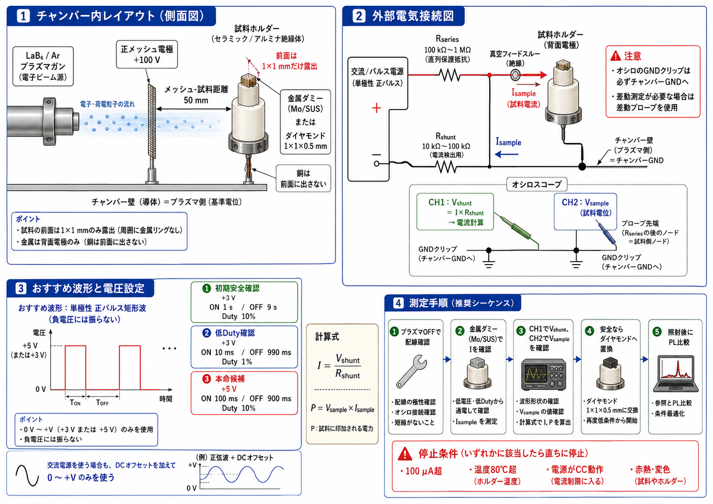
参考図A 測定回路と停止条件を含む説明図。
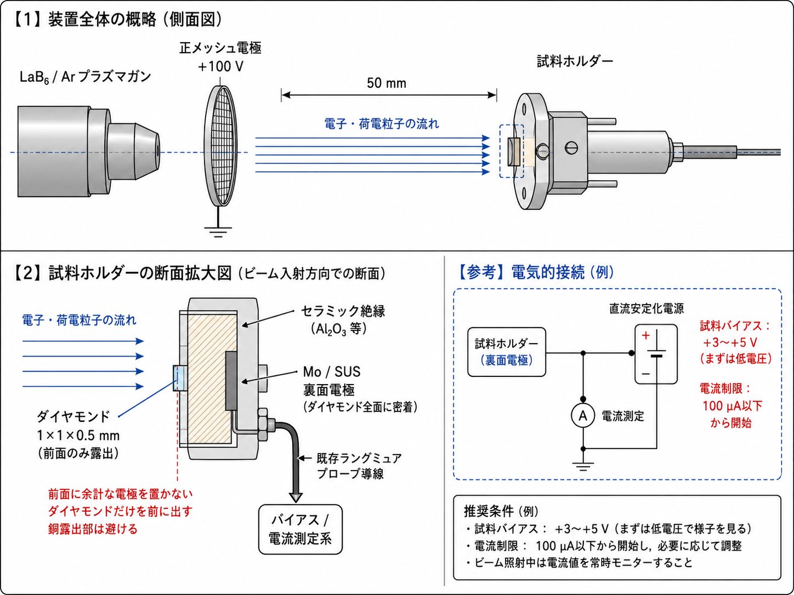
参考図B 水平方向ガンを考慮した装置配置図。
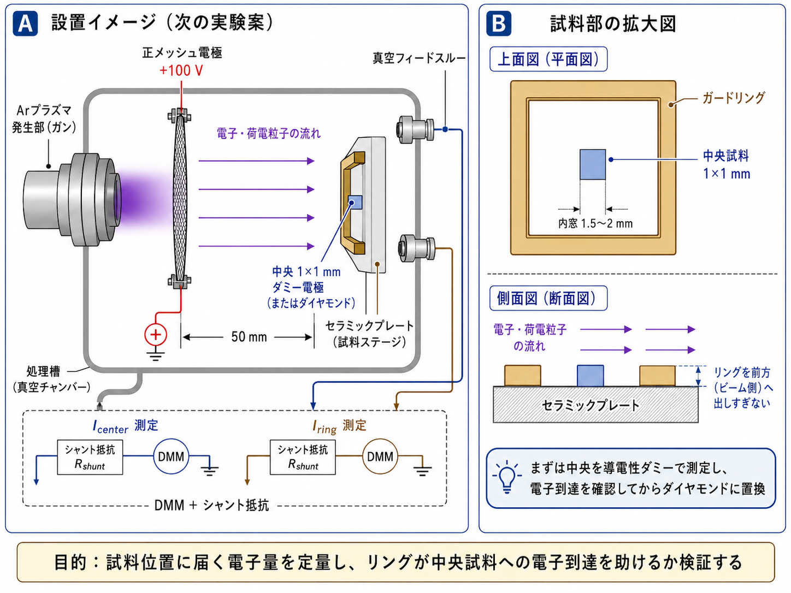
参考図C 試料部の拡大イメージ。
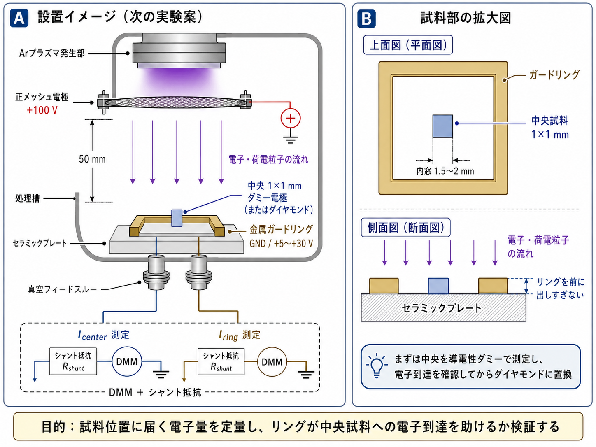
参考図D 初期検討時の縦方向配置図。実機とは向きが違うため参考扱い。